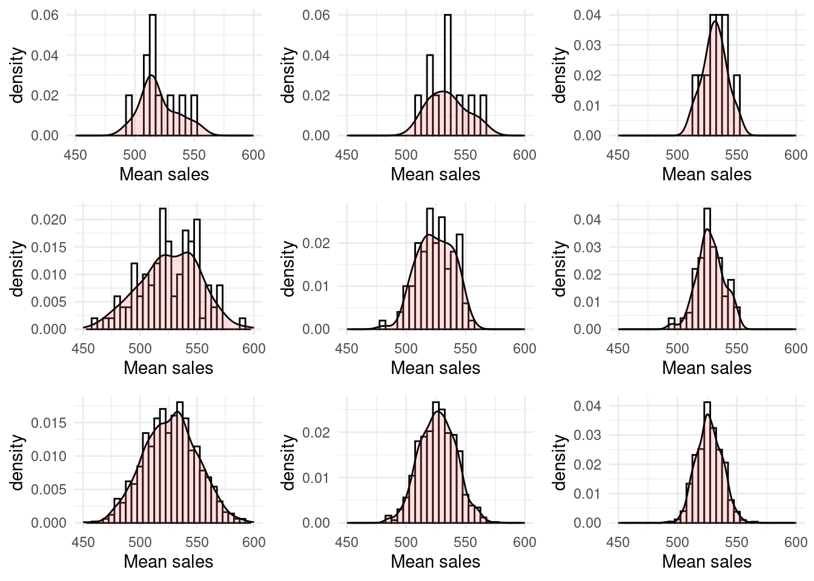
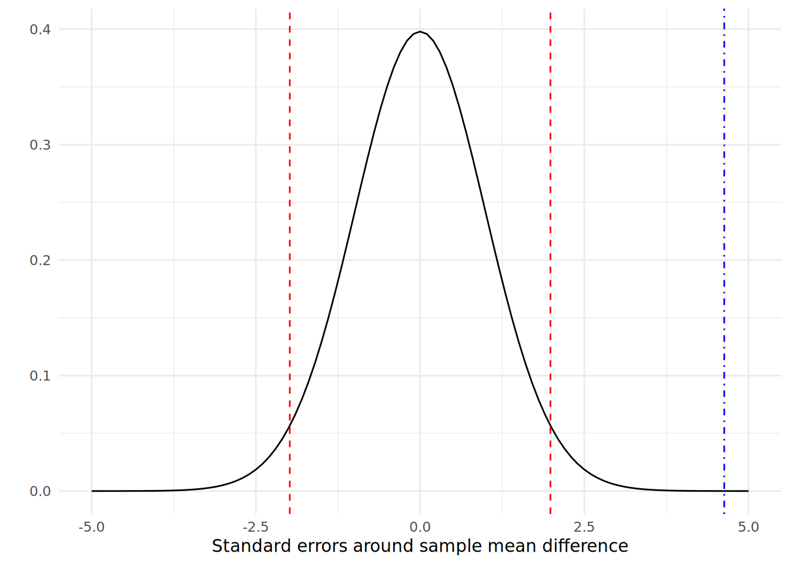

# if needed, use online url to download salespeople data
url <- "http://peopleanalytics-regression-book.org/data/salespeople.csv"
salespeople <- read.csv(url)3 Statistics Foundations
To properly understand multivariable models, an analyst needs to have a decent grasp of foundational statistics. Many of the assumptions and results of multivariable models require an understanding of these foundations in order to be properly interpreted. There are three topics that are particularly important for those proceeding further in this book:
- Descriptive statistics of populations and samples
- Distribution of random variables
- Hypothesis testing
If you have never really studied these topics, I would strongly recommend taking a course in them and spending good time getting to know them. Again, just as the last chapter was not intended to be a comprehensive tutorial on R, neither is this chapter intended to be a comprehensive tutorial on introductory statistics. However, we will introduce some key concepts here that are critical to understanding later chapters, and as always we will illustrate using real data examples.
In preparation for this chapter we are going to download a data set that we will work through in a later chapter, and use it for practical examples and illustration purposes. The data are a set of information on the sales, customer ratings and performance ratings on a set of 351 salespeople as well as an indication of whether or not they were promoted.
Let’s take a brief look at the first few rows of this data to make sure we know what is inside it.
head(salespeople) promoted sales customer_rate performance
1 0 594 3.94 2
2 0 446 4.06 3
3 1 674 3.83 4
4 0 525 3.62 2
5 1 657 4.40 3
6 1 918 4.54 2And let’s understand the structure of this data.
str(salespeople)'data.frame': 351 obs. of 4 variables:
$ promoted : int 0 0 1 0 1 1 0 0 0 0 ...
$ sales : int 594 446 674 525 657 918 318 364 342 387 ...
$ customer_rate: num 3.94 4.06 3.83 3.62 4.4 4.54 3.09 4.89 3.74 3 ...
$ performance : int 2 3 4 2 3 2 3 1 3 3 ...It looks like:
promotedis a binary value, either 1 or 0, indicating ‘promoted’ or ‘not promoted’, respectively.salesandcustomer_ratelook like normal numerical values.performancelooks like a set of performance categories—there appear to be four based on what we can see.
3.1 Elementary descriptive statistics of populations and samples
Any collection of numerical data on one or more variables can be described using a number of common statistical concepts. Let \(x = x_1, x_2, \dots, x_n\) be a sample of \(n\) observations of a variable drawn from a population.
3.1.1 Mean, variance and standard deviation
The mean is the average value of the observations and is defined by adding up all the values and dividing by the number of observations. The mean \(\bar{x}\) of our sample \(x\) is defined as:
\[
\bar{x} = \frac{1}{n}\sum_{i = 1}^{n}x_i
\] While the mean of a sample \(x\) is denoted by \(\bar{x}\), the mean of an entire population is usually denoted by \(\mu\). The mean can have a different interpretation depending on the type of data being studied. Let’s look at the mean of three different columns of our salespeople data, making sure to ignore any missing data.
mean(salespeople$sales, na.rm = TRUE)[1] 527.0057This looks very intuitive and appears to be the average amount of sales made by the individuals in the data set.
mean(salespeople$promoted, na.rm = TRUE)[1] 0.3219373Given that this data can only have the value of 0 or 1, we interpret this mean as the likelihood or expectation that an individual will be labeled as 1. That is, the average probability of promotion in the data set. If this data showed a perfectly random likelihood of promotion, we would expect this to take the value of 0.5. But it is lower than 0.5, which tells us that the majority of individuals are not promoted.
mean(salespeople$performance, na.rm = TRUE)[1] 2.5Given that this data can only have the values 1, 2, 3 or 4, we interpret this as the expected value of the performance rating in the data set. Higher or lower means inform us about the distribution of the performance ratings. A low mean will indicate a skew towards a low rating, and a high mean will indicate a skew towards a high rating.
Other common statistical summary measures include the median, which is the middle value when the values are ranked in order, and the mode, which is the most frequently occurring value.
The variance is a measure of how much the data varies around its mean. There are two different definitions of variance. The population variance assumes that that we are working with the entire population and is defined as the average squared difference from the mean:
\[ \mathrm{Var}_p(x) = \frac{1}{n}\sum_{i = 1}^{n}(x_i - \bar{x})^2 \] The sample variance assumes that we are working with a sample and attempts to estimate the variance of a larger population by applying Bessel’s correction to account for potential sampling error. The sample variance is:
\[ \mathrm{Var}_s(x) = \frac{1}{n-1}\sum_{i = 1}^{n}(x_i - \bar{x})^2 \]
You can see that
\[ \mathrm{Var}_p(x) = \frac{n - 1}{n}\mathrm{Var}_s(x) \] So as the data set gets larger, the sample variance and the population variance become less and less distinguishable, which intuitively makes sense.
Because we rarely work with full populations, the sample variance is calculated by default in R and in many other statistical software packages.
# sample variance
(sample_variance_sales <- var(salespeople$sales, na.rm = TRUE))[1] 34308.11So where necessary, we need to apply a transformation to get the population variance.
# population variance (need length of non-NA data)
n <- length(na.omit(salespeople$sales))
(population_variance_sales <- ((n-1)/n) * sample_variance_sales)[1] 34210.09Variance does not have intuitive scale relative to the data being studied, because we have used a ‘squared distance metric’, therefore we can square-root it to get a measure of ‘deviance’ on the same scale as the data. We call this the standard deviation \(\sigma(x)\), where \(\mathrm{Var}(x) = \sigma(x)^2\). As with variance, standard deviation has both population and sample versions, and the sample version is calculated by default. Conversion between the two takes the form
\[ \sigma_p(x) = \sqrt{\frac{n-1}{n}}\sigma_s(x) \]
# sample standard deviation
(sample_sd_sales <- sd(salespeople$sales, na.rm = TRUE))[1] 185.2245# verify that sample sd is sqrt(sample var)
sample_sd_sales == sqrt(sample_variance_sales)[1] TRUE# calculate population standard deviation
(population_sd_sales <- sqrt((n-1)/n) * sample_sd_sales)[1] 184.9597Given the range of sales is [151, 945] and the mean is 527, we see that the standard deviation gives a more intuitive sense of the ‘spread’ of the data relative to its inherent scale.
3.1.2 Covariance and correlation
The covariance between two variables is a measure of the extent to which one changes as the other changes. If \(y = y_1, y_2, \dots, y_n\) is a second variable, and \(\bar{x}\) and \(\bar{y}\) are the means of \(x\) and \(y\), respectively, then the sample covariance of \(x\) and \(y\) is defined as
\[ \mathrm{cov}_s(x, y) = \frac{1}{n - 1}\sum_{i = 1}^{n}(x_i - \bar{x})(y_i - \bar{y}) \] and as with variance, the population covariance is
\[ \mathrm{cov}_p(x, y) = \frac{n-1}{n}\mathrm{cov}_s(x, y) \]
Again, the sample covariance is the default in R, and we need to transform to obtain the population covariance.
# get sample covariance for sales and customer_rate,
# ignoring observations with missing data
(sample_cov <- cov(salespeople$sales, salespeople$customer_rate,
use = "complete.obs"))[1] 55.81769# convert to population covariance (need number of complete obs)
cols <- subset(salespeople, select = c("sales", "customer_rate"))
n <- nrow(cols[complete.cases(cols), ])
(population_cov <- ((n-1)/n) * sample_cov)[1] 55.65821As can be seen, the difference in covariance is very small between the sample and population versions, and both confirm a positive relationship between sales and customer rating. However, we again see this issue that there is no intuitive sense of scale for this measure.
Pearson’s correlation coefficient divides the covariance by the product of the standard deviations of the two variables:
\[ r_{x, y} = \frac{\mathrm{cov}(x, y)}{\sigma(x)\sigma(y)} \] This creates a scale of \(-1\) to \(1\) for \(r_{x, y}\), which is an intuitive way of understanding both the direction and strength of the relationship between \(x\) and \(y\), with \(-1\) indicating that \(x\) increases perfectly as \(y\) decreases, \(1\) indicating that \(x\) increases perfectly as \(y\) increases, and \(0\) indicating that there is no relationship between the two.
As before, there is a sample and population version of the correlation coefficient, and R calculates the sample version by default. Similar transformations can be used to determine a population correlation coefficient and over large samples the two measures converge.
# calculate sample correlation between sales and customer_rate
cor(salespeople$sales, salespeople$customer_rate, use = "complete.obs")[1] 0.337805This tells us that there is a moderate positive correlation between sales and customer rating.
You will notice that we have so far used two variables on a continuous scale to demonstrate covariance and correlation. Pearson’s correlation can also be used between a continuous scale and a dichotomous (binary) scale variable, and this is known as a point-biserial correlation.
cor(salespeople$sales, salespeople$promoted, use = "complete.obs")[1] 0.8511283Correlating ranked variables involves an adjusted approach leading to Spearman’s rho (\(\rho\)) or Kendall’s tau (\(\tau\)), among others. We will not dive into the mathematics of this here, but a good source is Bhattacharya and Burman (2016). Spearman’s or Kendall’s variant should be used whenever at least one of the variables is a ranked variable, and both variants are available in R.
# spearman's rho correlation
cor(salespeople$sales, salespeople$performance,
method = "spearman", use = "complete.obs")[1] 0.2735446# kendall's tau correlation
cor(salespeople$sales, salespeople$performance,
method = "kendall", use = "complete.obs")[1] 0.2073609In this case, both indicate a low to moderate correlation. Spearman’s rho or Kendall’s tau can also be used to correlate a ranked and a dichotomous variable, and this is known as a rank-biserial correlation.
3.2 Distribution of random variables
As we outlined in Section 1.2, when we build a model we are using a set of sample data to infer a general relationship on a larger population. A major underlying assumption in our inference is that we believe the real-life variables we are dealing with are random in nature. For example, we might be trying to model the drivers of the voting choice of millions of people in a national election, but we may only have sample data on a few thousand people. When we infer nationwide voting intentions from our sample, we assume that the characteristics of the voting population are random variables.
3.2.1 Sampling of random variables
When we describe variables as random, we are assuming that they take a form which is independent and identically distributed. Using our salespeople data as an example, we are assuming that the sales of one person in the data set is not influenced by the sales of another person in the data set. In this case, this seems like a reasonable assumption, and we will be making it for many (though not all) of the statistical methods used in this book. However, it is good to recognize that there are scenarios where this assumption cannot be made. For example, if the salespeople worked together in serving the same customers on the same products, and each individual’s sales represented some proportion of the overall sales to the customer, we cannot say that the sales data is independent and identically distributed. In this case, we will expect to see some hierarchy in our data and will need to adjust our techniques accordingly to take this into consideration.
Under the central limit theorem, if we take samples from a random variable and calculate a summary statistic for each sample, that statistic is itself a random variable, and its mean converges to the true population statistic with more and more sampling. Let’s test this with a little experiment on our salespeople data. Figure 3.1 shows the results of taking 10, 100 and 1000 different random samples of 50, 100 and 150 salespeople from the salespeople data set and creating a histogram of the resulting mean sales values. We can see how greater numbers of samples (down the rows) lead to a more normal distribution curve and larger sample sizes (across the columns) lead to a ‘spikier’ distribution with a smaller standard deviation.

sales from the salespeople data set based on sample sizes of 50, 100 and 150 (columns) and 10, 100 and 1000 samplings (rows)
3.2.2 Standard errors, the \(t\)-distribution and confidence intervals
One consequence of the observations in Figure 3.1 is that the summary statistics calculated from larger sample sizes fall into distributions that are ‘narrower’ and hence represent more precise estimations of the population statistic. The standard deviation of a sampled statistic is called the standard error of that statistic. In the special case of a sampled mean, the formula for the standard error of the mean can be derived to be
\[ SE = \frac{\sigma}{\sqrt{n}} \] where \(\sigma\) is the (sample) standard deviation and \(n\) is the sample size1. This confirms that the standard error of the mean decreases with greater sample size, confirming our intuition that the estimation of the mean is more precise with larger samples.
To apply this logic to our salespeople data set, let’s take a random sample of 100 values of customer_rate.
# set seed for reproducibility of sampling
set.seed(123)
# generate a sample of 100 observations
custrate <- na.omit(salespeople$customer_rate)
n <- 100
sample_custrate <- sample(custrate, n)We can calculate the mean of the sample and the standard error of the mean.
# mean
(sample_mean <- mean(sample_custrate))[1] 3.6485# standard error
(se <- sd(sample_custrate)/sqrt(n))[1] 0.08494328Because the normal distribution is a frequency (or probability) distribution, we can interpret the standard error as a fundamental unit of ‘sensitivity’ around the sample mean. For greater multiples of standard errors around the sample mean, we can have greater certainty that the range contains the true population mean.
To calculate how many standard errors we would need around the sample mean to have a 95% probability of including the true population mean, we need to use the \(t\)-distribution. The \(t\)-distribution is essentially an approximation of the normal distribution acknowledging that we only have a sample estimate of the true population standard deviation in how we calculate the standard error. In this case where we are dealing with a single sample mean, we use the \(t\)-distribution with \(n-1\) degrees of freedom. We can use the qt() function in R to find the standard error multiple associated with the level of certainty we need. In this case, we are looking for our true population mean to be outside the top 2.5% or bottom 2.5% of the distribution2.
# get se multiple for 0.975
(t <- qt(p = 0.975, df = n - 1))[1] 1.984217We see that approximately 1.98 standard errors on either side of our sample mean will give us 95% confidence that our range contains the true population mean. This is called the 95% confidence interval3.
# 95% confidence interval lower and upper bounds
lower_bound <- sample_mean - t*se
upper_bound <- sample_mean + t*se
cat(paste0('[', lower_bound, ', ', upper_bound, ']')) [3.47995410046738, 3.81704589953262]3.3 Hypothesis testing
Observations about the distribution of statistics on samples of random variables allow us to construct tests for hypotheses of difference or similarity. Such hypothesis testing is useful in itself for simple bivariate analysis in practice settings, but it will be particularly critical in later chapters in determining whether models are useful or not. Before we go through some technical examples of hypothesis testing, let’s overview the logic and intuition for how hypothesis testing works.
The purpose of hypothesis testing is to establish a high degree of statistical certainty regarding a claim of difference in a population based on the properties of a sample. Consistent with a high burden of proof, we start from the hypothesis that there is no difference, called the null hypothesis. We only reject the null hypothesis if the statistical properties of the sample data render it very unlikely, in which case we confirm the alternative hypothesis that a statistical difference does exist in the population.
Most hypothesis tests can return a p-value, which is the maximum probability of finding the sample results (or results that are more extreme or unusual than the sample results) when the null hypothesis is true for the population. The analyst must decide on the level of p-value needed to reject the null hypothesis. This threshold is referred to as the significance level \(\alpha\) (alpha). A common standard is to set \(\alpha\) at 0.05. That is, we reject the null hypothesis if the p-value that we find for our sample results is less than 0.05. If we reject the null hypothesis at \(\alpha = 0.05\), this means that the results we observe in the sample are so extreme or unusual that they would only occur by chance at most 1 in 20 times if the null hypothesis were true. An alpha of 0.05 is not the only standard of certainty used in research and practice, and in some fields of study smaller alphas are the norm, particularly if erroneous conclusions might have very serious consequences.
Three of the most common types of hypothesis tests are4:
- Testing for a difference in the means of two groups
- Testing for a non-zero correlation between two variables
- Testing for a difference in frequency distributions between different categories
We will go through an example of each of these. In each case, you will see a three-step process. First, we calculate a test statistic. Second, we determine an expected distribution for that test statistic. Finally, we determine where our calculated statistic falls in that distribution in order to assess the likelihood of our sample occurring if the null hypothesis is true. During these examples, we will go through all the logic and calculation steps needed to do the hypothesis testing, before we demonstrate the simple functions that perform all the steps for you in R. Readers don’t absolutely need to know all the details contained in this section, but a strong understanding of the underlying methods is encouraged.
3.3.1 Testing for a difference in means (Welch’s \(t\)-test)
Imagine that we are asked if, in general, the sales of low-performing salespeople are different from the sales of high-performing salespeople. This question refers to all salespeople, but we only have data for the sample in our salespeople data set. Let’s take two subsets of our data for those with a performance rating of 1 and those with a performance rating of 4, and calculate the difference in mean sales.
# take two performance group samples
perf1 <- subset(salespeople, subset = performance == 1)
perf4 <- subset(salespeople, subset = performance == 4)
# calculate the difference in mean sales
(diff <- mean(perf4$sales) - mean(perf1$sales))[1] 154.9742We can see that those with a higher performance rating in our sample did generate higher mean sales than those with a lower performance rating. But these are just samples, and we are being asked to give a conclusion about the populations they are drawn from.
Let’s take a null hypothesis that there is no difference in true mean sales between the two performance groups that these samples are drawn from. We combine the two samples and calculate the distribution around the difference in means. To reject the null hypothesis at \(\alpha = 0.05\), we would need to determine that the 95% confidence interval of this distribution does not contain zero.
We calculate the standard error of the combined sample using the formula5:
\[ \sqrt{\frac{\sigma_{\mathrm{perf1}}^2}{n_{\mathrm{perf1}}} + \frac{\sigma_{\mathrm{perf4}}^2}{n_{\mathrm{perf4}}}} \] where \(\sigma_{\mathrm{perf1}}\) and \(\sigma_{\mathrm{perf4}}\) are the standard deviations of the two samples and \(n_{\mathrm{perf1}}\) and \(n_{\mathrm{perf4}}\) are the two sample sizes.
We use a special formula called the Welch-Satterthwaite approximation to calculate the degrees of freedom for the two samples, which in this case calculates to 100.986. This allows us to construct a 95% confidence interval for the difference between the means, and we can test whether this contains zero.
# calculate standard error of the two sets
se <- sqrt(sd(perf1$sales)^2/length(perf1$sales)
+ sd(perf4$sales)^2/length(perf4$sales))
# calculate the required t-statistic
t <- qt(p = 0.975, df = 100.98)
# calculate 95% confidence interval
(lower_bound <- diff - t*se)[1] 88.56763(upper_bound <- diff + t*se)[1] 221.3809# test if zero is inside this interval
(0 <= upper_bound) & (0 >= lower_bound)[1] FALSESince this has returned FALSE, we conclude that a mean difference of zero is outside the 95% confidence interval of our sample mean difference, and so we cannot have 95% certainty that the difference in population means is zero. We reject the null hypothesis that the mean sales of both performance levels are the same.
Looking at this graphically, we are assuming a \(t\)-distribution of the mean difference, and we are determining where zero sits in that distribution, as in Figure 3.2.

perf1 and perf4, 95% confidence intervals (red dashed lines) and a zero difference (blue dot-dash line)
The red dashed lines in this diagram represent the 95% confidence interval around the mean difference of our two samples. The ‘tails’ of the curve outside of these two lines each represent a maximum of 0.025 probability for the true population mean. So we can see that the position of the blue dot-dashed line can correspond to a maximum probability that the population mean difference is zero. This is the p-value of the hypothesis test7.
The p-value can be derived by calculating the standard error multiple associated with zero in the \(t\)-distribution (called the \(t\)-statistic or \(t\)-value), by applying the conversion function pt() to obtain the upper tail probability and then multiplying by 2 to get the probability associated with both tails of the distribution.
# get t-statistic
t_actual <- diff/se
# convert t-statistic to p-value
2*pt(t_actual, df = 100.98, lower = FALSE)[1] 1.093212e-05Nowadays, it is never necessary to do these manual calculations ourselves because hypothesis tests are a standard part of statistical software. In R, the t.test() function performs a hypothesis test of difference in means of two samples and confirms our manually calculated p-value and 95% confidence interval.
t.test(perf4$sales, perf1$sales)
Welch Two Sample t-test
data: perf4$sales and perf1$sales
t = 4.6295, df = 100.98, p-value = 1.093e-05
alternative hypothesis: true difference in means is not equal to 0
95 percent confidence interval:
88.5676 221.3809
sample estimates:
mean of x mean of y
619.8909 464.9167 Because our p-value is less than our alpha of 0.05, we reject the null hypothesis in favor of the alternative hypothesis. The standard \(\alpha = 0.05\) is associated with the term statistically significant. Therefore we could say here that the two performance groups have a statistically significant difference in mean sales.
In practice, there are numerous alphas that are of interest to analysts, each reflecting different levels of certainty. While 0.05 is the most common standard in many disciplines, more stringent alphas of 0.01 and 0.001 are often used in situations where a high degree of certainty is desirable (for example, some medical fields). Similarly, a less stringent alpha standard of 0.1 can be of interest particularly when sample sizes are small and the analyst is satisfied with ‘indications’ from the data. In many statistical software packages, including those that we will see in this book, tests that meet an \(\alpha = 0.1\) standard are usually marked with period(.), those that meet \(\alpha = 0.05\) with an asterisk(*), \(\alpha = 0.01\) a double asterisk(**) and \(\alpha = 0.001\) a triple asterisk(***).
Many leading statisticians have argued that p-values are more a test of sample size than anything else and have cautioned against too much of a focus on p-values in making statistical conclusions from data. In particular, situations where data and methodology have been deliberately manipulated to achieve certain alpha standards—a process known as ‘p-hacking’—has been of increasing concern recently. See Chapter 11 for a better understanding of how the significance level and the sample size contribute to determining statistical power in hypothesis testing.
3.3.2 Testing for a non-zero correlation between two variables (\(t\)-test for correlation)
Imagine that we are given a sample of data for two variables and we are asked if the variables are correlated in the overall population. We can take a null hypothesis that the variables are not correlated, determine a t-statistic associated with a zero correlation and convert this to a p-value. The t-statistic associated with a correlation \(r\) between two samples of length \(n\) is often notated \(t^*\) and is defined as
\[ t^* = \frac{r\sqrt{n-2}}{\sqrt{1-r^2}} \] \(t^*\) can be converted to an associated p-value using a \(t\)-distribution in a similar way to the previous section, this time with \(n - 2\) degrees of freedom in our \(t\)-distribution. As an example, let’s calculate \(t^*\) for the correlation between sales and customer rating in our sample and convert it to a p-value.
# remove NAs from salespeople
salespeople <- salespeople[complete.cases(salespeople), ]
# calculate t_star
r <- cor(salespeople$sales, salespeople$customer_rate)
n <- nrow(salespeople)
t_star <- (r*sqrt(n - 2))/sqrt(1 - r^2)
# convert to p-value on t-distribution with n - 2 degrees of freedom
2*pt(t_star, df = n - 2, lower = FALSE)[1] 8.647952e-11Again, there is a useful function in R to cut out the need for all our manual calculations. The cor.test() function in R performs a hypothesis test on the null hypothesis that two variables have zero correlation.
cor.test(salespeople$sales, salespeople$customer_rate)
Pearson's product-moment correlation
data: salespeople$sales and salespeople$customer_rate
t = 6.6952, df = 348, p-value = 8.648e-11
alternative hypothesis: true correlation is not equal to 0
95 percent confidence interval:
0.2415282 0.4274964
sample estimates:
cor
0.337805 This confirms our manual calculations, and we see the null hypothesis has been rejected and we can conclude that there is a significant correlation between sales and customer rating.
3.3.3 Testing for a difference in frequency distribution between different categories in a data set (Chi-square test)
Imagine that we are asked if the performance category of each person in the salespeople data set has a relationship with their promotion likelihood. We will test the null hypothesis that there is no difference in the distribution of promoted versus not promoted across the four performance categories.
First we can produce a contingency table, which is a matrix containing counts of how many people were promoted or not promoted in each category.
# create contingency table of promoted vs performance
(contingency <- table(salespeople$promoted, salespeople$performance))
1 2 3 4
0 50 85 77 25
1 10 25 48 30We can see by summing each row that for the total sample we can expect 113 people to be promoted and 237 to miss out on promotion. We can use this ratio to compute an expected proportion in each performance category under the assumption that the distribution was exactly the same across all four categories.
# calculate expected promoted and not promoted
(expected_promoted <- (sum(contingency[2, ])/sum(contingency)) *
colSums(contingency)) 1 2 3 4
19.37143 35.51429 40.35714 17.75714 (expected_notpromoted <- (sum(contingency[1, ])/sum(contingency)) *
colSums(contingency)) 1 2 3 4
40.62857 74.48571 84.64286 37.24286 Now we can compare our observed versus expected values using the difference metric:
\[ \frac{(\mathrm{observed} - \mathrm{expected})^2}{\mathrm{expected}} \] and add these all up to get a total, known as the \(\chi^2\) statistic.
# calculate the difference metrics for promoted and not promoted
promoted <- sum((expected_promoted - contingency[2, ])^2/
expected_promoted)
notpromoted <- sum((expected_notpromoted - contingency[1, ])^2/
expected_notpromoted)
# calculate chi-squared statistic
(chi_sq_stat <- notpromoted + promoted)[1] 25.89541The \(\chi^2\) statistic has an expected distribution that can be used to determine the p-value associated with this statistic. As with the \(t\)-distribution, the \(\chi^2\)-distribution depends on the degrees of freedom. This is calculated by subtracting one from the number of rows and from the number of columns in the contingency table and multiplying them together. In this case we have 2 rows and 4 columns, which calculates to 3 degrees of freedom. Armed with our \(\chi^2\) statistic and our degrees of freedom, we can now calculate the p-value for the hypothesis test using the pchisq() function.
# calculate p-value from chi_squared stat
pchisq(chi_sq_stat, df = 3, lower.tail=FALSE)[1] 1.003063e-05The chisq.test() function in R performs all the steps involved in a chi-square test of independence on a contingency table and returns the \(\chi^2\) statistic and associated p-value for the null hypothesis, in this case confirming our manual calculations.
chisq.test(contingency)
Pearson's Chi-squared test
data: contingency
X-squared = 25.895, df = 3, p-value = 1.003e-05Again, we can reject the null hypothesis and confirm the alternative hypothesis that there is a difference in the distribution of promoted/not promoted individuals between the four performance categories.
3.4 Foundational statistics in Python
Elementary descriptive statistics can be performed in Python using various packages. Descriptive statistics of numpy arrays are usually available as methods.
import pandas as pd
import numpy as np
# get data
url = "http://peopleanalytics-regression-book.org/data/salespeople.csv"
salespeople = pd.read_csv(url)
# mean sales
mean_sales = salespeople.sales.mean()
print(mean_sales)527.0057142857142# sample variance
var_sales = salespeople.sales.var()
print(var_sales)34308.11458043389# sample standard deviation
sd_sales = salespeople.sales.std()
print(sd_sales)185.2244977869663Population statistics can be obtained by setting the ddof parameter to zero.
# population standard deviation
popsd_sales = salespeople.sales.std(ddof = 0)
print(popsd_sales)184.9597020864771The numpy covariance function produces a covariance matrix.
# generate a sample covariance matrix between two variables
sales_rate = salespeople[['sales', 'customer_rate']]
sales_rate = sales_rate[~np.isnan(sales_rate)]
cov = sales_rate.cov()
print(cov) sales customer_rate
sales 34308.114580 55.817691
customer_rate 55.817691 0.795820Specific covariances between variable pairs can be pulled out of the matrix.
# pull out specific covariances
print(cov['sales']['customer_rate'])55.81769119934507Similarly for Pearson correlation:
# sample pearson correlation matrix
cor = sales_rate.corr()
print(cor) sales customer_rate
sales 1.000000 0.337805
customer_rate 0.337805 1.000000Specific types of correlation coefficients can be accessed via the stats module of the scipy package.
from scipy import stats
# spearman's correlation
stats.spearmanr(salespeople.sales, salespeople.performance,
nan_policy='omit')SignificanceResult(statistic=np.float64(0.27354459847452534), pvalue=np.float64(2.0065434379079837e-07))# kendall's tau
stats.kendalltau(salespeople.sales, salespeople.performance,
nan_policy='omit')SignificanceResult(statistic=np.float64(0.20736088105812), pvalue=np.float64(2.7353258226376403e-07))Common hypothesis testing tools are available in scipy.stats. Here is an example of how to perform Welch’s \(t\)-test on a difference in means of samples of unequal variance.
# get sales for top and bottom performers
perf1 = salespeople[salespeople.performance == 1].sales
perf4 = salespeople[salespeople.performance == 4].sales
# welch's t-test with unequal variance
ttest = stats.ttest_ind(perf4, perf1, equal_var=False)
print(ttest)TtestResult(statistic=np.float64(4.629477606844271), pvalue=np.float64(1.0932443461577037e-05), df=np.float64(100.9768911762055))As seen above, hypothesis tests for non-zero correlation coefficients are performed automatically as part of scipy.stats correlation calculations.
# calculate correlation and p-value
sales = salespeople.sales[~np.isnan(salespeople.sales)]
cust_rate = salespeople.customer_rate[
~np.isnan(salespeople.customer_rate)
]
cor = stats.pearsonr(sales, cust_rate)
print(cor)PearsonRResult(statistic=np.float64(0.337805044858678), pvalue=np.float64(8.647952212092207e-11))Finally, a chi-square test of difference in frequency distribution can be performed on a contingency table as follows. The first value of the output is the \(\chi^2\) statistic, and the second value is the p-value.
# create contingency table for promoted versus performance
contingency = pd.crosstab(salespeople.promoted, salespeople.performance)
# perform chi-square test
chi2_test = stats.chi2_contingency(contingency)
print(chi2_test)Chi2ContingencyResult(statistic=np.float64(25.895405268094862), pvalue=np.float64(1.0030629464566802e-05), dof=3, expected_freq=array([[40.62857143, 74.48571429, 84.64285714, 37.24285714],
[19.37142857, 35.51428571, 40.35714286, 17.75714286]]))3.5 Learning exercises
3.5.1 Discussion questions
Where relevant in these discussion exercises, let \(x = x_1, x_2, \dots, x_n\) and \(y = y_1, y_2, \dots, y_m\) be samples of two random variables of length \(n\) and \(m\) respectively.
- If the values of \(x\) can only take the form 0 or 1, and if their mean is 0.25, how many of the values equal 0?
- If \(m = n\) and \(x + y\) is formed from the element-wise sum of \(x\) and \(y\), show that the mean of \(x + y\) is equal to the sum of the mean of \(x\) and the mean of \(y\).
- For a scalar multiplier \(a\), show that \(\mathrm{Var}(ax) = a^2\mathrm{Var}(x)\).
- Explain why the standard deviation of \(x\) is a more intuitive measure of the deviation in \(x\) than the variance.
- Describe which two types of correlation you could use if \(x\) is an ordered ranking.
- Describe the role of sample size and sampling frequency in the distribution of sampling means for a random variable.
- Describe what a standard error of a statistic is and how it can be used to determine a confidence interval for the true population statistic.
- If we conduct a t-test on the null hypothesis that \(x\) and \(y\) are drawn from populations with the same mean, describe what a p-value of 0.01 means.
- Extension: The sum of variance law states that, for independent random variables \(x\) and \(y\), \(\mathrm{Var}(x \pm y) = \mathrm{Var}(x) + \mathrm{Var}(y)\). Use this together with the identity from Exercise 3 to derive the formula for the standard error of the mean of \(x = x_1, x_2, \dots, x_n\):
\[ SE = \frac{\sigma(x)}{\sqrt{n}} \]
- Extension: In a similar way to Exercise 9, show that the standard error for the difference between the means of \(x\) and \(y\) is
\[ \sqrt{\frac{\sigma(x)^2}{n} + \frac{\sigma(y)^2}{m}} \]
3.5.2 Data exercises
For these exercises, load the charity_donation data set via the peopleanalyticsdata package, or download it from the internet8. This data set contains information on a sample of individuals who made donations to a nature charity.
- Calculate the mean
total_donationsfrom the data set. - Calculate the sample variance for
total_donationand convert this to a population variance. - Calculate the sample standard deviation for
total_donationsand verify that it is the same as the square root of the sample variance. - Calculate the sample correlation between
total_donationsandtime_donating. By using an appropriate hypothesis test, determine if these two variables are independent in the overall population. - Calculate the mean and the standard error of the mean for the first 20 entries of
total_donations. - Calculate the mean and the standard error of the mean for the first 50 entries of
total_donations. Verify that the standard error is less than in Exercise 5. - By using an appropriate hypothesis test, determine if the mean age of those who made a recent donation is different from those who did not.
- By using an appropriate hypothesis test, determine if there is a difference in whether or not a recent donation was made according to where people reside.
- Extension: By using an appropriate hypothesis test, determine if the age of those who have recently donated is at least 10 years older than those who have not recently donated in the population.
- Extension: By using an appropriate hypothesis test, determine if the average donation amount is at least 10 dollars higher for those who recently donated versus those who did not. Retest for 20 dollars higher.
Note that this formula assumes that the sample standard deviation is a close approximation of the population standard deviation, which is generally fine for samples that are not very small.↩︎
As sample sizes increase and sample statistics get very close to population statistics, whether we use a \(t\)-distribution or a \(z\)-distribution (normal distribution) for determining confidence intervals or p-values becomes less important as they become almost identical on large samples. The output of some later models will refer to \(t\)-statistics and others to \(z\)-statistics, but the difference is only likely to matter in small samples of less than 50 or so observations. In this chapter we will use the \(t\)-distribution as it is a better choice for all sample sizes.↩︎
Often we can use a rough estimate for larger samples that the 95% confidence interval is 2 standard errors either side of the sample mean.↩︎
We go through these three examples both because they are relatively common and to illustrate the details of the logic behind hypothesis testing. By understanding how hypothesis tests work, this will allow the reader to grasp the meaning of other such tests like the F-test or the Wald test, which we will refer to in later chapters of this book↩︎
If you are inquisitive about this formula, see the exercises at the end of this chapter.↩︎
I’ve kept the gory details of how this is derived out of view, but you can see them if you view the source code for this book.↩︎
We call this type of hypothesis test a two-tailed test, because the tested population mean can be either higher or lower than the sample mean, thus it can appear in any of the two tails for the null hypothesis to be rejected. One-tailed tests are used when you are testing for an alternative hypothesis that the difference is specifically ‘less than zero’ or ‘greater than zero’. In the
t.test()function in R, you can specify this in the arguments.↩︎http://peopleanalytics-regression-book.org/data/charity_donation.csv↩︎